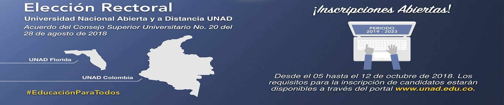
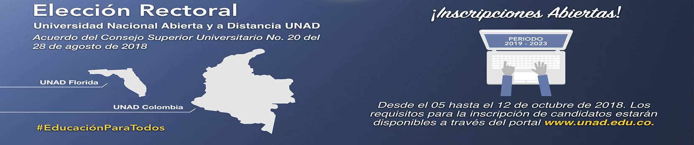

| | | Te damos la más cordial bienvenida a esta nueva modalidad de educación a distancia que hace uso de las tecnologías para mediar los procesos de enseñanza-aprendizaje. Esperamos que sea una experiencia de aprendizaje gratificante y enriquecedora.
Es probable que al iniciar un programa de educación a distancia en nuestra Universidad sientas temores ante la novedad. Este es un sentimiento común; sin embargo, como estudiante de la UNAD, deberás tener como hábito no depender totalmente de tus tutores para aprender y adquirir nuevos conocimientos, organizarte y cumplir con tus responsabilidades. Esto te permitirá trabajar a tu propio ritmo y con mayor flexibilidad de horarios.
Esperamos que aproveches tus estudios y no dudes en contactarnos ante cualquier duda o pregunta que tengas sobre este curso de entrenamiento al correo soporte@unadvirtual.org | | | |
 
